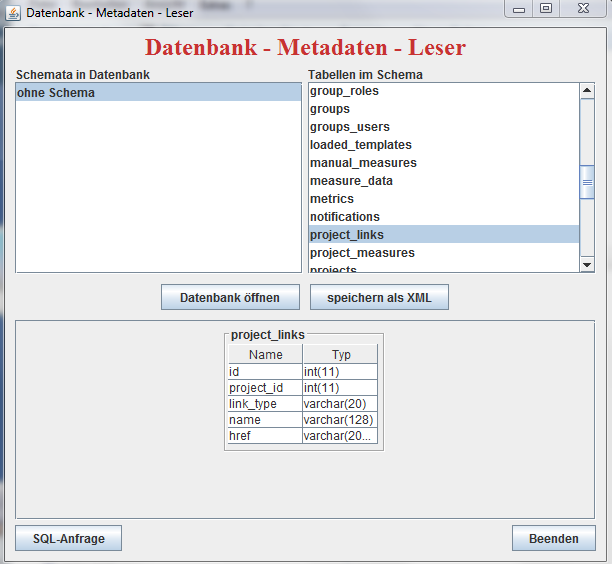

Read out meta data from DBs
Simple SWT application to read out meta data from DBs and perform SQL queries. I had originally implemented this back in 2005.

Download the program from here and execute the jar either by double click or with java -jar dbconnector.jar.
Navigate back to overview.